生成时间：2026-11-08T12:07:29+08:00
今日保留论文数：3
内容构成：今日新文 3 篇；补充推荐 0 篇；经典旧文精读 0 篇
阅读分层：重点精读 1 篇；相关简报 2 篇。精读依据科学贡献筛选，简报保留方法、结论及局限。
高能天体物理重点
1. Gamma-Ray Emission from LS 5039: A 30-500 GeV Excess and Phase-Resolved Broadband Spectral Modeling
- 来源：arXiv / astro-ph.HE
- 链接：https://arxiv.org/abs/2610.41739
- 作者：Xiaozhen Zhao, Jiandong Zhang, Pengfei Zhang
- 公告 / 来源日期：2026-11-02
- 阅读层级：重点精读
- 评分：novelty 8/10，importance 8/10，relevance 10/10，final 9.70/10
- 推荐理由：17.3年LAT在GeV—TeV过渡段给出新增定位与分相位谱，结合H.E.S.S./HAWC检验辐射分量及其能量预算，精读。
中文题目：LS 5039 在30–500 GeV出现额外辐射，百TeV谱尾检验局部激波模型
做了什么：作者用17.3年的Fermi-LAT事件重建LS 5039的0.1–500 GeV谱。在低能折断幂律上加一个对数抛物线后，似然检验统计量增加72.34，对应作者采用的渐近近似下7.90σ的局部显著性。高能光子的定位与目录源相差约0.006°，分相位后超额主要出现在致密天体位于前方的下合附近。作者再接上H.E.S.S.和HAWC的已发表谱，分别拟合上合与下合两个相位区间，比较电子逆康普顿与附加强子辐射两种解释。
为什么重要：这组数据把GeV和地面阵列的TeV波段之间接了起来。以原有低能趋势直接外推，会漏掉下合附近的额外通量。百TeV端是另一道约束。在论文采用的双星风激波顶点条件下，同步损失把电子上限压到约28–41 TeV，逆康普顿散射很难补齐HAWC谱尾。把过渡能段的观测增量与百TeV端的加速难题分开，才能判断是哪一段数据要求模型改变。
理论 / 观测 / 仪器方法价值：可复用的是分相位宽带拟合的流程。先用统一LAT背景和事件选择建立能谱，再把偏心轨道上的恒星光场、风密度、碰撞角、磁场和吸收逐节点代入，最后按同一相位定义与地面数据比较。评价物理解释时，作者同时报告BIC、拟合残差、粒子能量上限和供能需求，并把未参与拟合的NuSTAR谱留作交叉检验。这些检验回答不同问题，能把一个统计改善追溯到具体的模型代价。
为什么应该关注：对于LACT等地面甚高能阵列，优先价值是获得与LAT重叠的过渡带以及相位分辨的高能谱。可以沿用H.E.S.S.与HAWC定义的上合、下合区间，另外记录相位边界附近对轨道周期的敏感性。若新数据能确定30–500 GeV超额在轨道上的宽度，或确认几十TeV到百TeV的谱形与调制是否一起变化，就可分别检验额外分量和吸收几何。要判断质子起源，还需检验辐射位置、滞留时间和供能，现有局部快逃逸解的功率需求高出假定自转损失约三个数量级。
展开详细解读：文章讲解、背景、理论、重点章节、图表与相关工作
文章详细讲解
科学问题。 LS 5039的GeV谱几GeV处已有弯折，H.E.S.S.则看到调制的TeV谱。两段之间究竟只是原谱尾部，还是有可定位的新结构？HAWC观测又把谱延伸至约200 TeV，要求同一个辐射模型同时解释过渡带、轨道调制和最高能端。作者把前一个问题交给LAT数据似然，把后一个问题交给相位分辨的物理谱模型。
数据和方法。 LAT取2008年8月4日至2025年11月25日的Pass 8 SOURCE事件，使用15°×15°感兴趣区和银河、各向同性弥散背景。候选低能谱形先用AIC比较，折断幂律作为基线。15个对数能箱的通量分别用似然拟合，附加成分的整体显著性另从全谱模型比较得到。宽带阶段用Naima对每个相位节点计算辐射和吸收，分别拟合两段相位的LAT、H.E.S.S.及HAWC检测点。
主要结果。 高能定位的统计误差圈覆盖LS 5039，且过渡段超额主要出现在INFC。采用脉冲星风的局部激波顶点模型时，低于约10 GeV由磁层外间隙与相对论热电子的逆康普顿主导，更高能的电子成分接到TeV。在此基线上加入质子碰撞项，上合区间的BIC改善更明显，主要帮助描述多TeV至超高能谱尾。过渡段显著性与强子模型的BIC偏好来自两套检验，不能混为一个发现量。
边界。 两相位混合谱模型的约化卡方仍明显大于1，质子谱参数也约束弱。顶点尺度和快逃逸下，低碰撞效率导致供能远超假定的脉冲星自转损失。混合模型在INFC还把未纳入拟合的3–70 keV同步通量低估约21倍。延展流出、非均匀激波或独立加速区可以改变约束，致密天体的身份在本研究中也是工作假设。
关键结果是怎么做出来的
先确认过渡带结构。 图1低能段与先前LAT结果大致一致，高能绿色点逐渐离开黑色折断幂律。全能段拟合增加归一化、指数与曲率三个参数，参考能量固定100 GeV。作者报告ΔTS为72.34，并用三自由度卡方近似换算7.90σ。附加分量归一化归零时形状参数失去意义，因此这个换算依赖作者的渐近假设，阅读时以原始ΔTS和定位为直接可复核信息。
再查它是否在源的位置。 图2的30 GeV以上检验统计图给出最佳位置赤经276.5700°、赤纬−14.8505°，68%统计定位半径约0.01°。目录位置相差约0.006°，在误差圈内。这支持超额来自LS 5039所在方向。定位检验给的是角位置的一致性，分辨不了双星内部具体哪个加速区。
把两种相位趋势分开。 图3的上合附近用蓝色、下合附近用红色，两面板标出各自的绿色超额点和上限。过渡带的额外通量主要在INFC。另一方面，图5对整个GeV到超高能谱的比较里，加入质子项对SUPC的BIC改善更大，分别是10.80和4.27。这两条相位趋势可以共存，因为统计量由不同数据与不同模型决定。
看最高能端缺口有多大。 在固定的顶点磁化和Bohm加速假设下，节点磁场约2.16–4.48 G，电子上限28–41 TeV。深Klein–Nishina区的散射光子能量受电子能量限制，因而这个局部模型没有足够高能的电子解释百TeV谱。降低磁场能减弱同步损失，也会降低同一局部尺度可约束的粒子能量。
最后查质子项要付出的代价。 顶点的强子积分上限采用0.346 PeV。论文给出的快逃逸滞留时间约12.8和15.5秒，平均碰撞效率分别约为百万分之四和百万分之三。拟合所需功率分别为假定自转损失的约1040与3000倍。延长滞留或改变辐射区会改变这个账本，当前数据无法确定这些变化。
展开背景、理论、公式、模型和章节导读
背景知识
伽马射线双星的轨道为辐射机制提供重复的几何变化。LS 5039由O型星与身份尚未定论的致密伴星组成，约3.9天绕行一周，偏心率约0.35。论文假定伴星是中子星，用脉冲星风与恒星风碰撞解释激波。近日点到远日点两星距离约0.094至0.196 AU，对应辐射与气体靶环境的显著改变。
H.E.S.S.早已在LS 5039看到3.9天TeV调制。下合附近TeV通量集中且谱较硬，可由逆康普顿散射角和成对吸收随相位改变解释一部分，也允许高能粒子谱本身变化。两个宽相位箱包含的是一段轨道，不能用上合或下合那个瞬时角度代替整个箱的积分。
Fermi-LAT在几GeV处已看到谱弯折，轨道调制与TeV不同。对高能过渡带而言，光子较少、银河弥散和近邻源又会影响似然。延长曝光能提高高能端统计量，仍需看额外成分对基线谱形与背景的依赖。
HAWC将LS 5039的观测延伸至约200 TeV。其发表结果在2–118 TeV确认轨道调制，100 TeV以上的变动证据更弱。短轨道周期与调制支持至少部分辐射与双星环境相关。对模型而言，如何在小尺度内加速和留住足够高能粒子，与能不能把几个宽带谱点连起来同样重要。
基础理论 / 方法脉络
风动量和辐射靶。 近似各向同性的恒星风与相对论脉冲星风在动量通量相等处相碰。距离顶点较近的一侧局部通量较大，在本模型中脉冲星一侧的顶点距离约为两星间距的18%。恒星光子和风质子都随到恒星的距离减小而增密，分别为逆康普顿和质子碰撞提供靶。
逆康普顿。 电子将恒星紫外光提升到伽马射线。在低电子能量的Thomson极限，散射能量可近似按电子洛伦兹因子平方增加。电子静止系的种子光子能量接近电子静能时，Klein–Nishina效应降低散射效率，散射光子的能量上限接近电子本身能量。恒星光场比磁能密度大，仍可在高能区由同步损失限制加速。
成对吸收。 向观测者传播的伽马光子可以和O星光子发生双光子成对产生。其阈值依赖光子碰撞角，路径经过高光密度区时光深也会上升。逆康普顿产生率与吸收率都具有方向性，两种调制应在同一轨道几何上求值。
质子碰撞。 高能质子与风中的质子发生非弹性碰撞，产生可衰变为伽马光子的中性π介子。即使单个质子的能量足够高，碰撞次数仍取决于与恒星风物质混合及驻留多久。快速越过激波顶点时，大多数质子会逃逸，辐射谱归一化便要求更大的注入功率。
模型比较。 统计上新增谱项会增加自由度，BIC用自由参数个数和检测点数量给出惩罚。BIC较低表示在给定数据与误差模型下，这个候选对照组得到更多支持。判断加速机制时，还要看绝对拟合、能量限制、未参与拟合的数据以及其他几何能否产生相近谱形。
公式与推导
从观测时间到可比较的相位。 下面是对原文第II.3节轨道折叠的教学写法，$t,T_0$ 用同一时标、单位为日，$P_{\rm orb}=3.90609$日，$T_0$取近星点，$\phi$为无量纲相位。SUPC取[0,0.45)及[0.9,1)，INFC取[0.45,0.9)。不同地面数据采用的3.90603日会使相位缓慢漂移，原文估计最大约0.036。
量化全谱额外成分。 下式为第II.2节定义，$\mathcal L_{\max}$为同样LAT数据与背景下的最大似然，BPL和LP分别是折断幂律和新增对数抛物线。ΔTS是无量纲的整体检验统计量。原文以三个附加参数的渐近分布换算显著性，图1蓝阶梯的单能箱TS则用来衡量各箱检测。
从两股风求顶点。 原文式(1)及其后几何关系。脉冲星风的动量流率为$L_{\rm sd}/c$，与恒星的$\dot M v_w$比较得到无量纲$\eta$。再用逆平方稀释、$R_\star+R_p=D_{\rm sep}$求两个距离。$L_{\rm sd}$为erg/s，$\dot M$为g/s，$v_w,c$为cm/s，三段距离统一用cm。
在顶点放入两种靶。 原文式(2)和(3)来自球面能量通量与质量守恒。恒星光度$L_\star$除以球面面积及光速得到光能密度$u_\star$，单位erg/cm³。风质量通量除以流速和质子质量$m_p$得到氢数密度$n_{\rm H}$，单位cm⁻³。
磁场由局部风能决定。 原文式(4)把无量纲比例$\epsilon_B$乘以脉冲星风能密度。高斯制下$B$用G，$U_B$用erg/cm³。固定$\epsilon_B$和$L_{\rm sd}$时，乘积$BR_p$与相位无关，后面比较加速和约束上限会用到。
检查散射所处能区。 这是原文第III节的转变判据和阈值。电子洛伦兹因子$\gamma=E_e/(m_ec^2)$，种子能量$\epsilon_\star\simeq2.8k_{\rm B}T_{\rm eff}$约9 eV，$m_ec^2$与它应取同一能量单位。令散射参数$b_{\rm KN}$到1便得到约7 GeV的电子能量。
电子和质子的局部上限。 原文式(5)及第III节约束关系。加速时间随能量增长，同步冷却时间随能量减小，联立产生$E_{e,\max}\propto B^{-1/2}\eta_{\rm acc}^{-1/2}$。原文质子上限取碰撞冷却、Hillas约束及动力学限制三者之小。这里$e$是高斯制元电荷，$\eta_{\rm acc}$和$\eta_{\rm acc,p}$无量纲，Bohm极限为1，$eBR_p$用一致高斯制给出能量。
从粒子分布到辐射分量。 原文式(8)为产生IC1的相对论Maxwell分布。$E$与特征能量$E_{\rm char}$统一用一种能量单位，$A_{\rm M}$保证$dN/dE$单位是每能量的粒子数。产生IC2及质子碰撞辐射的族群分别用原文式(9)和(10)的连续折断幂律。积分时在上一步的上限处截断，文中的粒子谱没有再拟合独立指数截止。
节点辐射加权成相位箱谱。 原文式(6)。$F$采用观测谱能量通量的单位，$r$是相位区间，$\phi_i$为轨道节点，归一化权重满足$\sum_{i\in r} w_i=1$。先在每个节点乘透射率$e^{-\tau_{\gamma\gamma}}$再加总。$F_{\rm OG}$为固定外间隙项，纯轻子拟合设$F_{pp}=0$。
相位箱里的数据似然。 原文式(7)去掉不随模型参数改变的常数项。$F_j$和$\sigma_j$分别是检测通量与同单位误差，$E_j$为谱点能量，$\boldsymbol\theta$为分布参数。以误差归一化的残差平方构成似然，使用SUPC的27点、INFC的46点。上限与X射线未进入该式。
给拟合收益扣除自由度代价。 原文式(11)和(12)，$k$为自由参数数目，$N$是该相位箱检测点个数。混合模型的三个质子参数使惩罚多出$3\ln N$，只有最大似然增益超过这一代价才产生正ΔBIC。结果为10.80和4.27，比较限定于此处的两模型与数据处理。
模型拟合 / 应用方法
LAT计数层。 在相同事件质量、天区和弥散模板下比较三种基线谱形。作者用AIC选折断幂律，并从单箱拟合输出通量点。全谱BPL+LP的参考能量固定100 GeV，三个新增自由量对应归一化、指数和曲率。上限的约定是单箱TS低于4时报告95%上限。
几何和环境。 相位区间内的粒子参数共享，局部靶密度、散射角和光深在节点上分别求值。作者在SUPC使用24个节点并在遮挡边界拆分，在INFC用6个节点。固定自转损失$2\times10^{36}$ erg/s和$\epsilon_B=0.01$可缩小退化范围，结果相应地依赖这组环境设定。
粒子谱和采样。 纯轻子基线含两套电子分布及固定磁层分量，混合版加一套质子折断幂律。电子和质子高能指数固定为3，质子增加归一化、折断能量和低能指数三个拟合量。两个相位各自以有界均匀先验MCMC采样，128个walker，1500步预热及10000步正式采样。文中报告接受率约0.46–0.55，采样诊断可用，质子物理参数仍弱约束。
模型比较与误差。 BIC使用每相位的已检测点及最大高斯似然。作者没有额外加入跨仪器标定不确定性或谱点协方差，约化卡方依然明显偏高。跨仪器系统差异若随能量变化，会影响哪个能段驱动模型偏好。此处只给两候选的相对比较。
外部检验和可辨识性。 把未拟合的NuSTAR通量与同步预测对照，INFC在纯轻子和混合版分别低估约7.5和21倍。再用局部快逃逸滞留时间检查拟合质子族群的功率，远高于假定的风供能。二者指出需要检验辐射位置、额外供能或多区输运。它们同时限制了把BIC改进直接解释成质子探测的做法。
重点章节 / 结果段落怎么读
- 第II.1–II.2节和图1–2。检查LAT事件筛选、折断幂律基线、ΔTS及定位，建立额外通量最直接的证据。
- 第II.3节、图3和表2。对照上合与下合的谱点和上限，留意长基线的折相位误差。
- 第III节、图4和表3。从轨道风平衡到靶密度、磁场和能量上限，找出局部模型的关键假定。
- 第IV节、图5和表4–5。理解相位平均、模型自由度、采样、检测点与留作检验的数据。
- 第V.1–V.3节。比较不同相位下的BIC、NuSTAR偏差和质子功率，区分局部一带模型的限制与其他起源。
关键图表与解读
图1｜相位平均谱的30–500 GeV超额
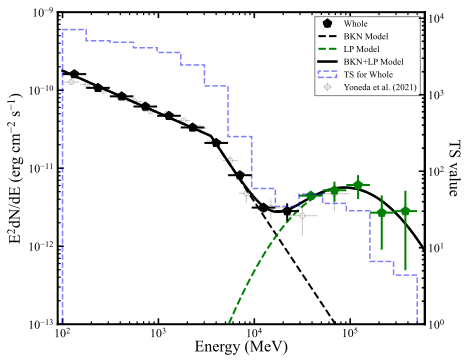
图注：LS 5039的0.1–500 GeV能谱能量分布。实心五边形为本文测量，绿色突出约30–500 GeV的超额。黑虚线为折断幂律，绿虚线为新增对数抛物线，黑实线为两者之和。蓝色虚阶梯表示各能量箱的检验统计量TS，读右轴。图中各谱点TS均大于4，空心灰圆为Yoneda等人的结果。横轴为光子能量（MeV），左轴为能谱能量通量（erg cm⁻² s⁻¹）。
怎么看这张图：先看绿色高能点相对于黑虚线的偏离。蓝色阶梯表示单箱TS，整段超额的显著性则来自两个全能段模型的似然差。 直接显示本文最扎实的新增数据。
来源与置信度：arXiv HTML；source verified；https://arxiv.org/html/2610.41739v1/all_sed.svg
图3｜上合附近和下合附近的LAT谱
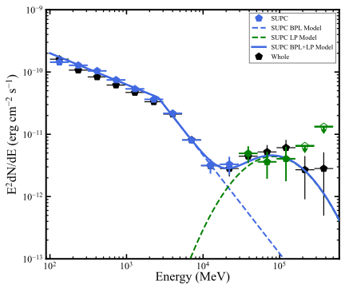
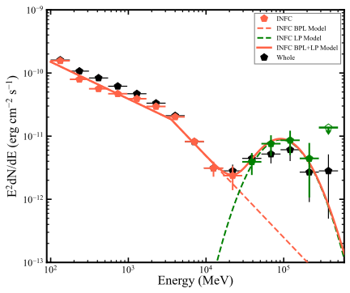
图注：左图为上合附近（SUPC，蓝），右图为下合附近（INFC，红），黑点为相位平均谱。两图均以绿点突出约30–500 GeV超额。蓝、红虚线分别为两时段的折断幂律，绿虚线为附加对数抛物线，相应实线是两分量相加。向下箭头的空心绿标记为95%上限。两图横轴均为光子能量（MeV），纵轴为能谱能量通量（erg cm⁻² s⁻¹）。
怎么看这张图：在相同能段比较两栏绿色点和箭头，超额以INFC为主。不要把SUPC的上限当成对该分量的通量测定。 说明超额在轨道上的分布，便于区分与百TeV拟合的相位结论。
来源与置信度：arXiv HTML；source verified；https://arxiv.org/html/2610.41739v1/ph_supc.svg；https://arxiv.org/html/2610.41739v1/ph_infc.svg
图5｜两轨道区间的GeV到超高能谱拟合
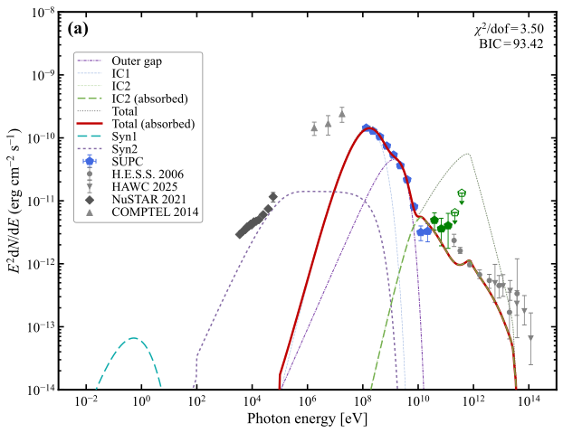
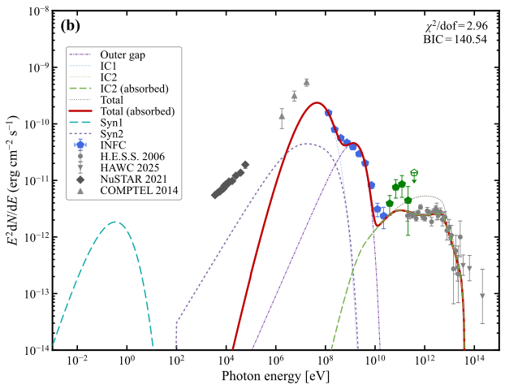
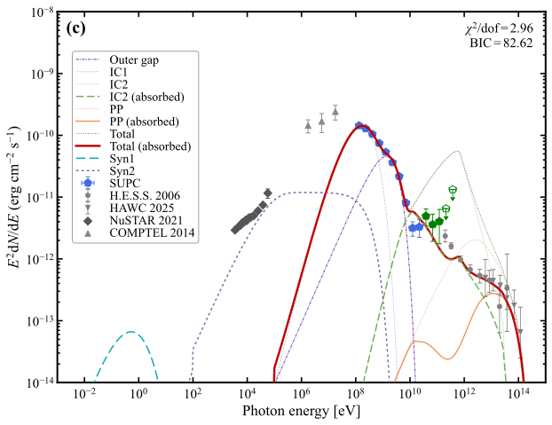
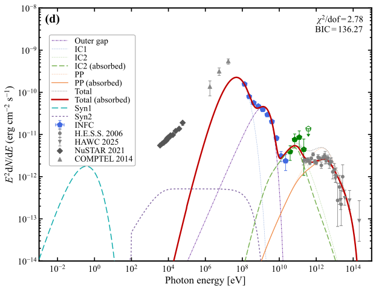
图注：左列SUPC、右列INFC。上排(a,b)为纯轻子模型，下排(c,d)为轻子—强子模型。紫色点划线、浅蓝虚线和绿色线分别为外间隙、IC1和IC2，深绿为吸收后的IC2。青色和紫罗兰色为两项同步辐射。下排浅橙和橙色为内禀和吸收后的质子碰撞分量，灰点线、红实线为内禀和吸收后的总模型。LAT在30 GeV以下和以上的测量分别为蓝、绿五边形，空心标记为95%上限。灰色为H.E.S.S.、HAWC、NuSTAR及COMPTEL数据，其中X射线和MeV点不参与拟合。各面板横轴为光子能量（eV），纵轴为能谱能量通量（erg cm⁻² s⁻¹），角标给出约化卡方与BIC。
怎么看这张图：对照上下排的HAWC高能点和橙线，再检查INFC的NuSTAR区。高能端改善与未拟合X射线仍有明显缺口可以同时成立。 并列展示两种模型、两种相位及跨波段检验。
来源与置信度：arXiv HTML；source verified；https://arxiv.org/html/2610.41739v1/supc_l.svg；https://arxiv.org/html/2610.41739v1/infc_l.svg；https://arxiv.org/html/2610.41739v1/supc_lh.svg；https://arxiv.org/html/2610.41739v1/infc_lh.svg
强相关工作
H.E.S.S.合作组在2006年确立约3.9天的TeV通量和谱调制，给本篇划分相位箱及引入成对吸收提供数据基础。HAWC随后把能谱延伸至约200 TeV，并在2–118 TeV测得4.7σ轨道调制，给本篇的局部加速上限设置了观测压力。本篇新增的是过渡带LAT统计量和与这些谱的并列检验。 H.E.S.S. 轨道调制 · HAWC 百TeV能谱
Yoneda等的NuSTAR加11年LAT分析已指出多分量GeV谱，并提供本篇未拟合的硬X射线对照。Dubus给出沿轨道变化的双光子成对吸收计算。两项工作分别帮助检查现有光谱成分和几何。 Yoneda等宽带观测 · Dubus双光子吸收
Huber等的相对论流体计算发现延展的风碰撞区和次级激波，为一带模型之外的加速与输运提供实例。Bosch-Ramon与Khangulyan用HAWC结果考察低密度、轨道变动与约束条件，提出超相对论流出可缓解电子加速和冷却的张力。它检验的是不同几何，说明局部顶点的电子能量上限应保留其适用范围。 Huber等多区流体模型 · Bosch-Ramon与Khangulyan的流出方案
同一事件 / 同类源线索：
相似工作：
基础理论 / 方法工作：
相反观点 / 张力线索：
相关简报
1. HAWC, Fermi-LAT and Chandra Detections of High Energy Particles in the S106 Star Forming Region
- 来源：arXiv / astro-ph.HE
- 链接：https://arxiv.org/abs/2610.41163
- 作者：Rishi Babu, Stephen DiKerby, Tulun Ergin, Shuo Zhang, Mehr Un Nisa, HAWC Collaboration
- 公告 / 来源日期：2026-11-02
- 阅读层级：相关简报
- 评分：novelty 7/10，importance 8/10，relevance 10/10，final 9.40/10
- 推荐理由：HAWC给已知KM2A源增加独立谱点和空间模板比较，LAT及Chandra补全证据；多波段归属及强子/轻子仍退化，作为简报。
中文题目：S106附近的TeV辐射可由电子产生，红外光场是关键检验
问题、方法与结论：研究用约2900天HAWC数据分析LHAASO源J2027，比较点源、弥散背景与Planck尘埃形态。最终气体模板比点源的BIC低31，扣模后无显著残差。Fermi-LAT在200 MeV–1 TeV测得约11σ的延展源，最佳空间模型为半径约0.39°的径向高斯。作者遮蔽一张约45 ks的Chandra观测中的已知点源，提取S106中央附近的弥散X射线，再与LAT、HAWC和LHAASO数据合成宽带谱。
意义与贡献：尘埃和气体附近存在TeV辐射，可能来自质子碰撞，也可由电子散射恒星形成区的红外光产生。这里最有用的结果是，一组电子通过同步、轫致与逆康普顿辐射就能描述数据，最佳有效散射距离约3.55 pc，此处S106红外能量密度高于所用环境光场。增强靶光子会改变对强子通量的推断。
可借鉴之处：先比较天区形态和残差，再把局部红外场放入宽带模型，是可复用的分析顺序。显著性对背景处理敏感，完整弥散模板加高斯得到试验修正后4.8σ，遮蔽密云区后使用Planck模板的拟合才超过论文采用的阈值。另一方面，混合模型的质子截止到达预设1 PeV上界，这个数值反映边界和模型退化。
局限与关注点：LACT若能分能段比较TeV峰、红外照明范围和CO云形态，就能检验高能电子散射与质子撞击的预期差异。还需要处理明亮邻源与银河弥散，并结合较深的X射线观测量化未分辨点源对弥散通量的贡献。当前GeV与TeV形态、红外源和Chandra小视场的共同归属仍属建模前提。
图4｜HAWC显著性和残差
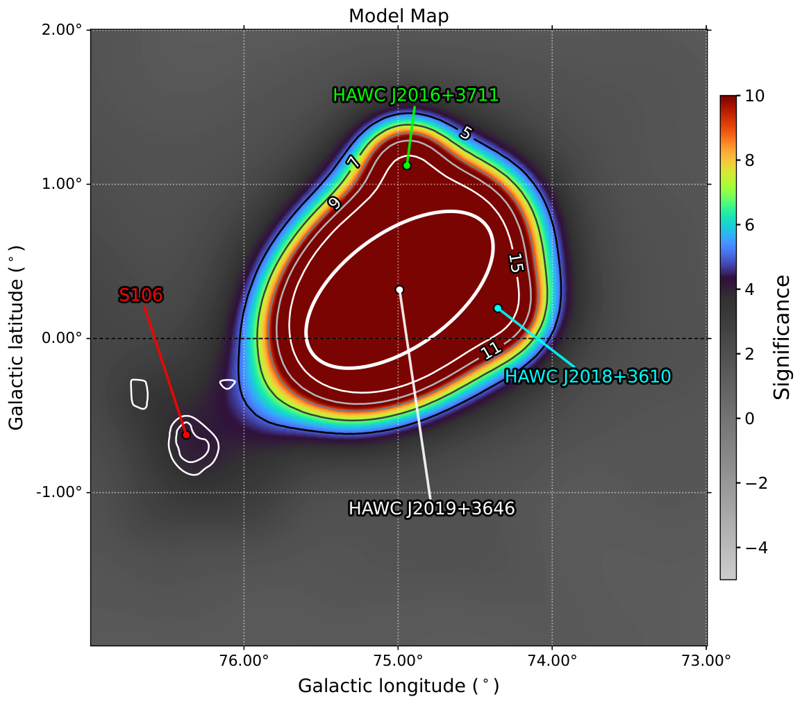
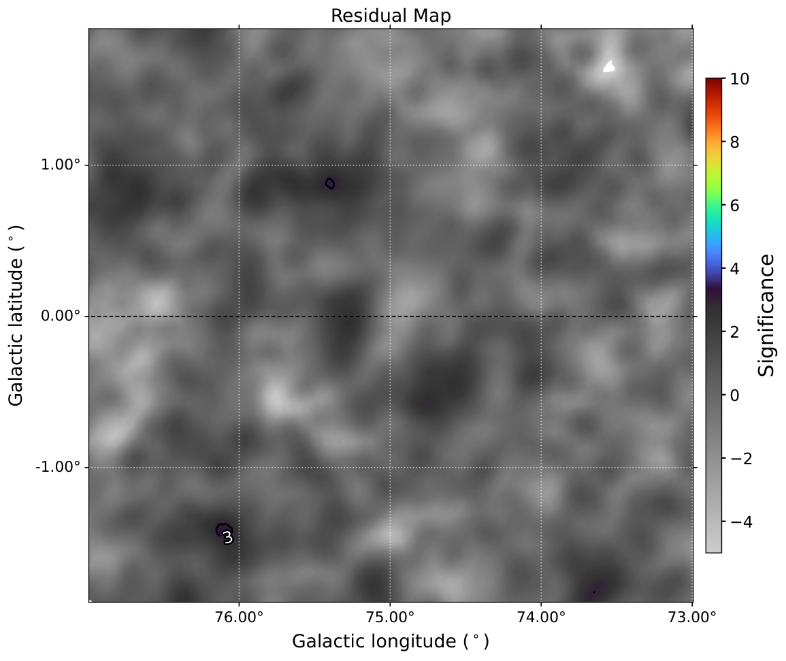
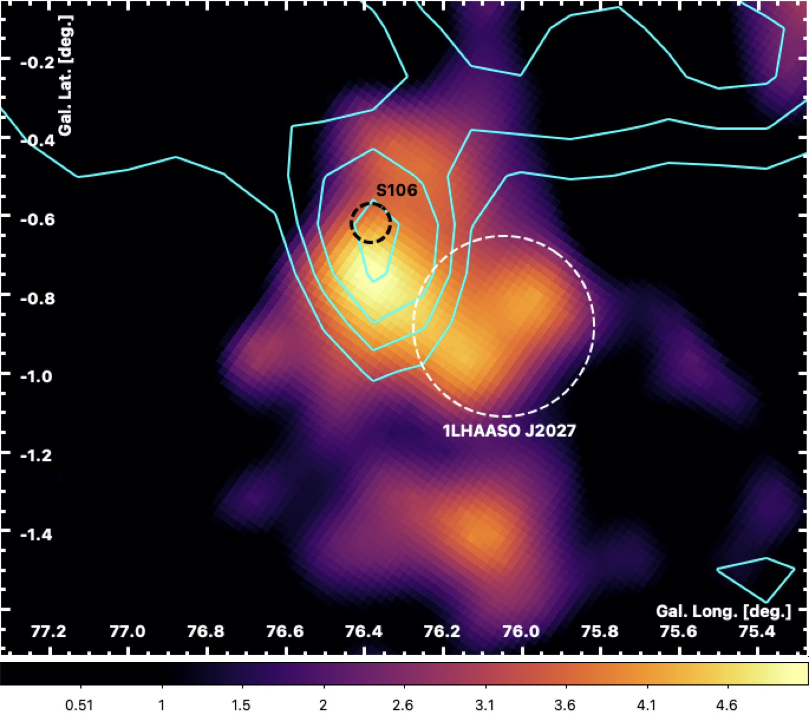
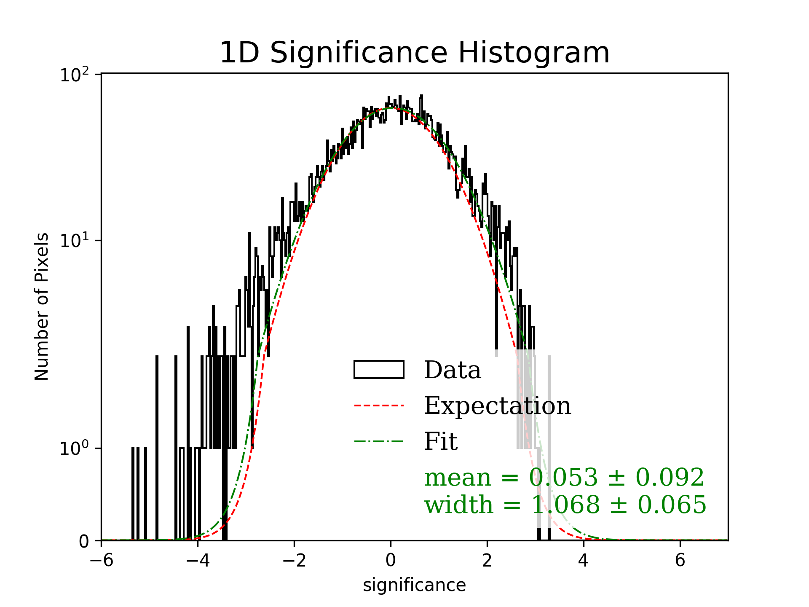
图注：左上为J2027视场的HAWC显著性分布，白等高线为HAWC J2027+3718所用Planck尘埃空间模板。右上为建模各源后的残差显著性。左下放大J2027，色标至5.1σ，青色线为速度−10至5 km/s的12CO积分强度8、16、24和32 K km/s轮廓，黑虚圈为S106红外位置和大致范围，白虚线为LHAASO定位误差区。右下为右上图的残差显著性直方图。地图横纵轴分别为银经和银纬（度）；直方图横轴为显著性，纵轴为像素数，黑框、红虚线、绿点划线为数据、期望和拟合。
怎么看这张图：先比较左下黑圈、CO轮廓与显著性峰，再看扣模残差。局部CO或尘埃形态匹配支持延展模板，但也可能与红外光场和电子的空间分布有关。 检验源形态、背景处理及空间关联。
来源与置信度：arXiv HTML；source verified；https://arxiv.org/html/2610.41163v1/J2027FitMap2.png；https://arxiv.org/html/2610.41163v1/J2027Residual2.png；https://arxiv.org/html/2610.41163v1/figures/HAWC_wCOcont_LB_ptsrc.png；https://arxiv.org/html/2610.41163v1/figures/1dhist.png
图7｜S106附近的纯轻子宽带谱
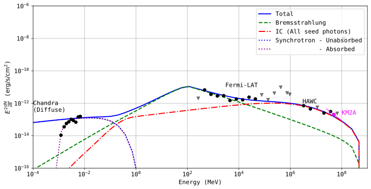
图注：S106附近高能辐射的E²dN/dE谱。黑圆是检测，灰箭头为上限，品红圆及其短线表示KM2A通量和谱斜率。蓝色为纯轻子总模型。蓝、紫点线为约2.4 μG磁场中的同步辐射，绿虚线为氢密度250 cm⁻³下的轫致辐射，红点划线为以S106自身红外光子为主的逆康普顿分量。约1 GeV处轫致辐射陡降来自Naima设置的粒子能量下限。横轴为能量（MeV），纵轴为能谱能量通量（erg cm⁻² s⁻¹）；图例区分吸收前后的同步辐射。
怎么看这张图：比较红线与TeV数据，再回看低能轫致辐射和X射线同步辐射。可行拟合说明强子并非必需，空间对应关系和替代混合解仍需检验。 解释同一电子群如何拟合相隔多个数量级的波段。
来源与置信度：arXiv HTML；source verified；https://arxiv.org/html/2610.41163v1/FullLepto.svg
2. Enhanced Detectability of Very-High-Energy Gamma Rays from Off-Axis Short Gamma-Ray Bursts: Impacts of Structured Jets and External Inverse-Compton Scattering
- 来源：arXiv / astro-ph.HE
- 链接：https://arxiv.org/abs/2610.41476
- 作者：Yuri Sato, Bing Theodore Zhang, Kohta Murase
- 公告 / 来源日期：2026-11-02
- 阅读层级：相关简报
- 评分：novelty 7/10，importance 8/10，relevance 9/10，final 9.05/10
- 推荐理由：定量比较有角结构喷流、外部逆康普顿和SSC对近邻短暴追踪的影响，观测窗口可迁移，探测率依赖设定。
中文题目：近邻离轴短暴的TeV余辉可能更亮，外部逆康普顿改变跟进窗口
问题、方法与结论：作者针对双中子星并合后的短伽马暴，用AMES计算高斯、幂律和均匀顶帽三类喷流，把延展和平台X射线作为外部种子光子，与同一前向激波的同步自康普顿分量对照。计算在等到达时面上积分并考虑Klein–Nishina抑制。以约43 Mpc的高斯喷流为例，离轴6°时两类外部逆康普顿峰可超过CTAO中型镜的灵敏度线，离轴15°时低于该线。
意义与贡献：有角结构的喷流在视线方向仍可保留相对论物质，短暴主爆发漏检后仍可能找到TeV余辉。延展与平台种子光分别在约300秒与一万秒改变峰值时刻。对延展情形，早期外部逆康普顿可先升后落，而同步自康普顿在同一时段还在上升。这一时间差提供了用联合光变追踪后续中心活动的办法。
可借鉴之处：文中把峰值通量转成随离轴角变化的TeV探测距离，再与引力波的有效距离取交集。采用给定并合率、喷流和种子光参数，ET时代延展光驱动的联合率约0.01–2次/年，同一模型的SSC约0.001–0.2次/年。这个量级差用于理解哪种辐射成分会改变样本选择，数值随X射线亮度、微物理、喷流角结构和仪器灵敏度而变。
局限与关注点：对LACT或CTAO追踪引力波触发，及时覆盖数百秒至数小时能比较峰出现的时间，近邻和较小离轴角的事件优先。同步X射线能检查种子光是否存在；持续TeV观测可区分早峰和后续SSC。本研究给出模型下的探测窗口，实测可见性和天空定位仍决定能否执行。
图2｜离轴角与1 TeV余辉的时间演化
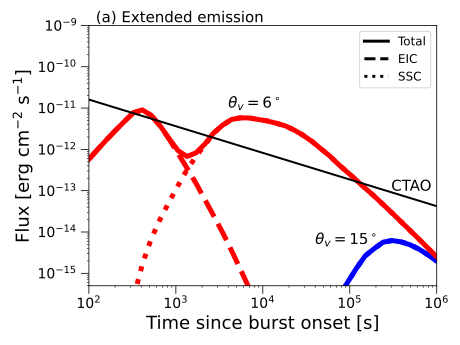
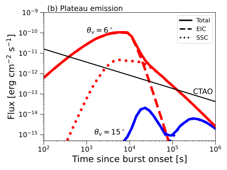
图注：红色和蓝色为距高斯喷流轴6°和15°的视线，模型红移0.01，光度距离约43 Mpc。a为延展X射线种子光场，b为平台种子光场。彩色实线、虚线及点线分别为总通量、外部逆康普顿和同步自康普顿。黑实线为CTAO中型望远镜灵敏度。横轴为距暴起始时间（秒），纵轴为1 TeV处的能量通量（erg cm⁻² s⁻¹）。
怎么看这张图：分别找虚线峰值的到达时间，再比较红、蓝曲线是否达到灵敏度。延展与平台光场的持续时间改变了适合跟进的窗口。 显示跟进策略依赖视角、种子光子和观测延时。
来源与置信度：arXiv HTML；source verified；https://arxiv.org/html/2610.41476v1/flux_g_EE.svg；https://arxiv.org/html/2610.41476v1/flux_g_PL.svg
图4｜引力波与TeV联合探测距离
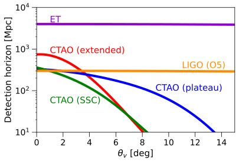
图注：探测距离随观测视线离喷流轴角度的变化。Advanced LIGO O5和爱因斯坦望远镜（ET）采用的全天平均双中子星探测距离分别为300和4000 Mpc。CTAO/MST曲线用高斯喷流峰值通量估算，红、蓝为延展与平台X射线种子驱动的外部逆康普顿，绿为SSC；橙和紫为O5与ET的引力波探测距离。横轴为离轴角（度），纵轴为探测距离（Mpc，对数刻度）。
怎么看这张图：同一视角下，两类仪器距离中较小者限制联合体积。ET扩大引力波距离后，多数角度仍由TeV灵敏度限制。曲线来自基准模型。 直接交代联合探测角度选择和观测瓶颈。
来源与置信度：arXiv HTML；source verified；https://arxiv.org/html/2610.41476v1/horizon.svg
说明
评分由 LLM 给出初评，再由本地阈值策略过滤；IACT、TeV 伽马射线和高能中微子天文学按重点方向处理。